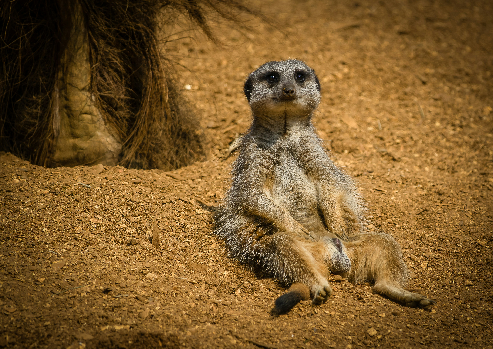
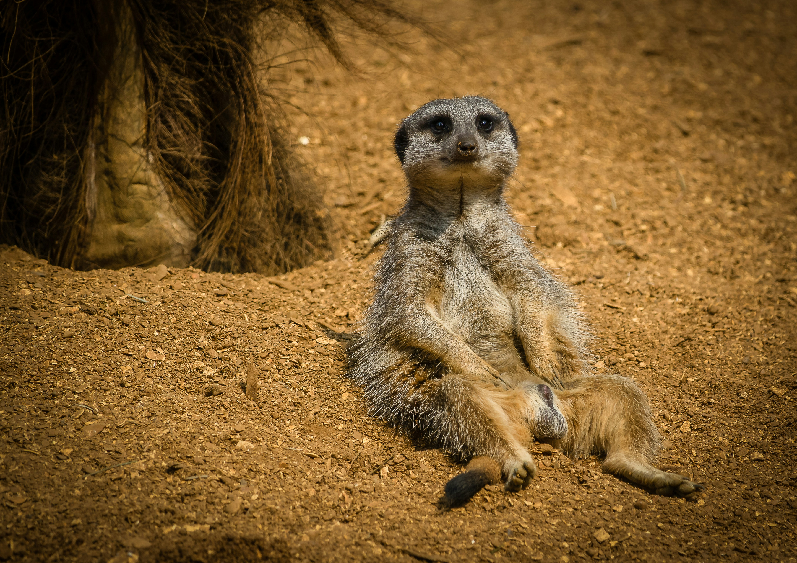

La lucha contra la desertificación es un esfuerzo global para combatir la degradación de la tierra en zonas áridas, semiáridas y subhúmedas secas, con el objetivo de promover el desarrollo sostenible4. Esta lucha abarca actividades de prevención o reducción de la degradación de las tierras, la rehabilitación de tierras parcialmente degradadas, y la recuperación de tierras desertificadas4.
Causas y relación con otros problemas:
La desertificación, la degradación de la tierra y la sequía son algunos de los retos medioambientales más apremiantes en la actualidad6.
La sequía, la desertificación y la degradación del suelo causadas por el cambio climático están directamente relacionadas con el uso sostenible de los ecosistemas y la seguridad alimentaria2.
Contacto CNULD
Para información sobre los eventos de La Convención de las Naciones Unidas de Lucha contra la Desertificación
Sede mundial: 4245 North Fairfax Drive, Suite 100, Arlington, Virginia 22203-1606, Estados Unidos
Teléfono:800-461-9330
- Visite aquí
Oficinas Regionales de Enlace:
- África: Eaux et Forêts, Avenida Mohamed VI, Km 7.5
Soussi, Rabat 10170, Marruecos
- Teléfono: 212 537 666 301
- Asia:Ubicada en la sede de la UNCCD en Bonn
- Teléfono: 49 228 815 2830
- América Latina y el Caribe:Edificio Norte, División de CELADE
Dag Hammarskjöld 3477
Santiago de Chile, Chile
- Teléfono: 562 2210-2017
- Mediterráneo Septentrional :Edificio Norte, División de CELADE
Ministerio de Bosques y Asuntos Hídricos, 1ª Dirección Regional
Buyukdere Caddesi No:265
Campus del Bosque Fatih, Maslak / Sartre
Estambul, Turquía
- Teléfono: 90 212 2993301
- Europa:Ubicada en la sede de la UNCCD en Bonn
- Teléfono: 49 228 815 2824
- Nueva York:Sede de las Naciones Unidas
Edificio DC1
11° piso, Oficina 1170
Nueva York, N.Y. 10017, EE. UU.
- Teléfono: 001 212 963 4871
 
